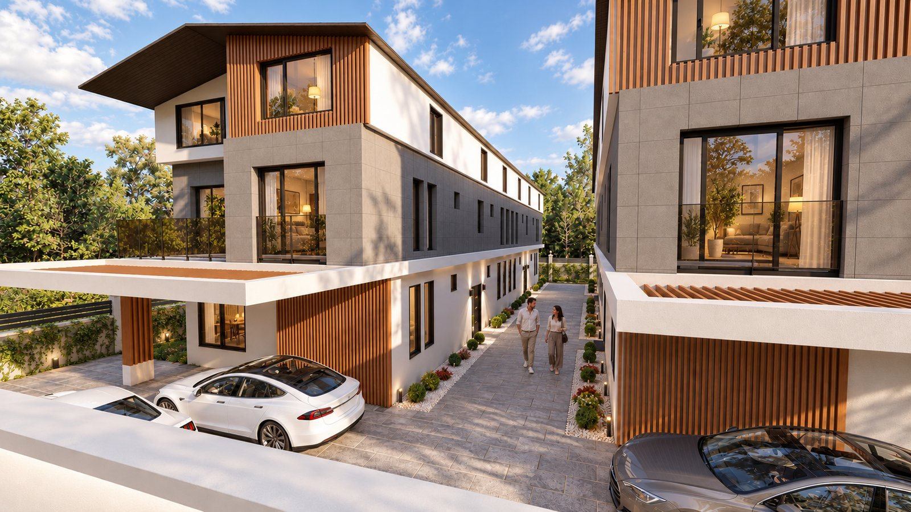
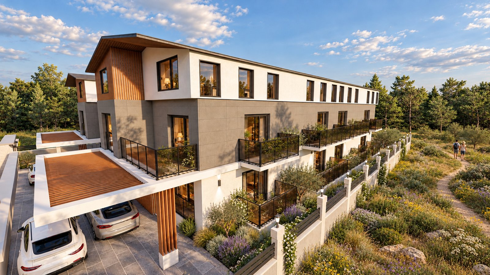

Ovacık, Fethiye, Muğla

Geliştirici, Ovacık’taki bu 2026 villa projesini özel bahçeler, konutlara özel kapalı otopark, ahşap kaplı cepheler ve geniş teraslarla tanıtıyor. Kaynakta güvenilir bir konut sayısı veya kesin teslim tarihi belirtilmiyor.
Geliştiricinin proje görsellerine dayanan, APERTIS tarafından yapay zekâ ile iyileştirilmiş çalışmalar.

Resmî sayfa projeyi “Devam Ediyor” olarak listeliyor. Güncel müsaitlik doğrudan geliştiriciden teyit edilmelidir. Kaynak kontrol tarihi: 2026-10-12. Müsaitlik ve tarihler geliştirici tarafından teyit edilmelidir.
Bu örnek başvuru kabul etmemektedir. Sipariş edilen bir sunum, onayladığınız iletişim bilgilerini ve başvuru bağlantılarını içerir.